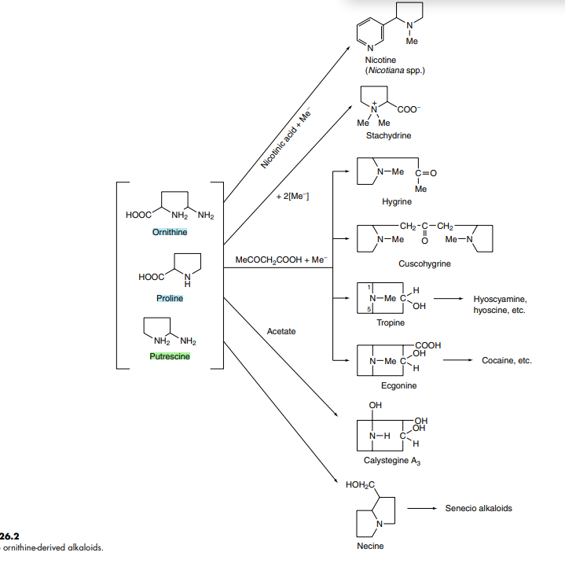
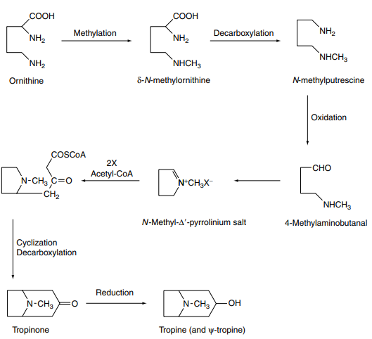

→ principal alkaloids of medicinal interest in this group:
- (-)-hyoscyamine → [ its more stable racemate atropine ]
- hyoscine ( scopolamine )
- atropine → tropic acid + tropine
- hyoscine → tropic acid + oscine
- 40 different ester bases of the tropane type have now been discovered.
- Erythroxylaceae
- Convolvulaceae
- Dioscoreaceae
- Rhizhophoraceae
- Cruciferae
- Euphorbiaceae
- semisynthetic derivatives ( e.g. // hyoscine butylbromide ( Buscopan ) are of medicinal importance.
1.1. BIOGENESIS OF TROPANE ALKALOIDS
→ characteristic alkaloids of the group are " esters of hydroxytropanes and various acids " (tropic)
→ two distinct biogenetic moieties warrant consideration.
→ Datura,Hyoscyamus,Duboisa
→ tropane moiety:
- formation of the tropane ring system has apparent variations between species in the stereospecific incoporation of some prescursor.
- early work : ornithine and acetate ( as presc. of tropane nucleus)
- can be supplied my methionine & can be incorporated at the very early stage of biosynthesis.
- intact incoroporation of N-methylornithine → hyoscine and hyosciamine of Datura metel + Datura stramonium.
→ Putrescine ( the symetrical diamine fomred by decarboxylation of ornithine )
- an N-methyl-derivative also serve as precursor
- putrescine N-methyltranferase → specific enzyme to the biosynthesis of tropane alkaloids.

→ reduction of tropinone yields both tropine and pseudotropine (ψ-tropine)-(3-β-hydrpxytropane)
- NADPH as coenyzme
→ hydroxyls and ester groups are also common
- C-6 & C-7 (R2/R3) of the tropane ring system.
- next stage of biosynthesis of hysociamine → esterif. of tropine and tropic acid.
- involvement of two acetyl-CoA-dependent acyltranferases → 3a-and 3β-acetoxytropanes [D.stramonium-tranformed root ]
- tropic acid fragment of hyoscine and hyosciamine derived from phenylalanine (as phenyllatic acid) of the tropane alkaloid
1.2 Ontogenesis
→ in some plants of Solanaceae (belladone/scopolia)
- hyosciamine is the dominant alkaloid of Stramonium
- hyoscine ; younger plants principle alkaloids of the leaves.
→ secondary modifications:
- may occur in "aerial part" (e.g. // epoxidation of hyoscyamine to give hyoscine)
2.STRAMONIUM LEAF
→ / thornapples leaves / Jamestown weed
→ dried leaves and flowering top of Datura Stramonium (Solanaceae)
→ NOT LESS than :
- 0.25% of alkaloids as hyosciamine
→ flowering summer and early autumn.
→ ripe fruit is a
- thorny capsule about 3-4cm long.
2.1Constituents
→ 0.2-0.45% of alkaloids
- hyoscyamine
- hyoscine
- little atropine (formed by hyoscyamine by racemization)
- two parts of hyoscyamine to one part of hyoscine
- should contain NOT more than 3% stem
- 0.2% of mydriatic alkaloids
→ Roots contain :
- additional hyoscine and hyoscyamine and other.
→ commercial 'datura leaf'
- Datura innoxia
- Datura metel
- is principally from India
- leaves contain : 0.5% of alkaloids
- over 30 alkaloids (D.metel)
- South-America [Ecuador]
- arboraceous , perennial speicies
- yields about 0.8% of hyoscine.
2.3Uses
→ Atropine
- stimulant action
- depress the nerve endings to the secretory action.
- lacks stimulation
- sedative properties
- used in control of motor sickness
- preoperative medication (with papaveretum)
- ophthalmic practice to dilate the pupil of the eye.
3.HYOSCYAMUS LEAF(Henbane)
→ dried leaves/flower tops
- Hyoscyamus niger (Solanaceae)
- NOT less than 0.05% of total alkaloids → [ hyoscyamine]
- central Europe/US [came from Britain]
3.1Plant
→ biennial
- a-biennies
- β-annua
→ Henbae flowers :
- hairy five-lobed calyx is present
- drak grey in colour
- contain about 0.06-0.10% of alkaloids
- hyoscyamine with little hyoscine/atropine
- together with calystegines (nontropane alkaloids)
3.2Collection and Preparation
→ biennal herbane traditionally grown in England
- May or June
- annual Hyoscyamus albus
- July or August
3.3. Constituents
→ leaves contain:
- 0.045-0.14% of alkaloids
- 8-12% of acid-insoluble ash (NOT more than 12%)
- Hyoscyamine and hyoscine are the principal alkaloids
- fine powder adjusted to contain 0.05-0.07 of total alkaloids (NOT more than 5.0%)
3.4 Allied drugs
→ Hyoscyamus albus
- France
- fruits are barely swollen at the base
- quantatively/qualitatively its alkaloids appear similar to those of H.niger
→ seeds pressed into the cavities of decayed teeth to obtain pain relief
→ Hyosciamus muticus
- India & Upper Egypt
- "indian henbane"
- related plant "Hyoscyamus reticulatus" → contain — hyoscyamine, (almost identical to Η.nigra)
- produced hyoscine as the principal alkaloids
- dried leaves
- perennial plant (30-60cm)
- 1.7% of alkaloids in the leaves
- 0.5% in the stems
- 2.0% in the flowers
- chief alkaloids is hyoscyamine → principally used for the isolation of it as atropine
- alkaloidal mixture of plants grown in Afghansitan has the following composition
- hyoscyamine 75% apoatropine 15% hyoscine 5%
- with smaller quantities of — noratropine/norhyoscine.
4.BELLADONNA LEAF
→ dried leves
→ fruit-bearing flowering tops
- Atropa belladonna (Solanaceae)
- chief substance → hyoscyamine
- all the aerial parts (Belldona Herb)
- part of the stem (3%)
4.1Plant
→ deadly nightshade → Atropa belladonna
- perennial herb about 1.5m
- end of June-July
- five-lobed calyx presist attached to the purpulish-black berry
- bilocular, numerous seeds , about the size of a cherry
4.2 Constituents
→ 0.3-0.60% of alkaloids
- chief hyoscyamine
- small quantities of volatile bases [pyridine / N-methylpyrroline]
- leaves also contain scopoletin
- calclium oxalate
- yiled 14% of ash
- finely powdered drug
- 0.28-0.32% of total alkaloids.
4.3Allied drug
→ Indiana belladonna
- Atropa acuminata
- differs from belladonna in that
- flowers → yellow-brown
- leaves → browinish-green
→ Atropa baetica
- southern Spain , northen Marocco
- yellow flowers and black berries
5.BELLADONNA ROOT
→ dried roots of Atropa belladonna Solanaceae
- 0.3-1.0% of alkaloids
- 82-97% → hyoscyamine
- 2.7-15% → atropine
- 0-2.6% → scopolamine
- tropinone reductase → isolated from tranformed belladonna roots.
5.1Allied drug
→ Indiana belladonna root
- from Atropa acuminata
- brownish-grey roots
- constituents are similar to those of European Belladonna
6.DUBOISIA LEAVES
→ 3 piecies of Dubosia are indigenous to Australia
- Dubosia myporoides
- the largest and more densely leaved/ bushy trees
- hyoscine and hyoscyamine
- norhyascyamine,valeroidine,poroidine,valtropine → minor alkaloids contents
- there are two races "northen"+"southern"
- differ in their relative contents of hyoscyamine and hyoscina
7.SCOPOLIA
→ all species contain tropane-alkaloids
- similar to those of belladonna
→ Scopolia carniolica
- central and eastern Europe
- smaller than belladonna
- leaves are more lanceolate and translucent
- source of hyoscyamine
- last two also contain
- 6-hydroxyhyoscyamine
- daturamine (anisodine)
- related to tropane-alkaloid-containing plant
- Tibetian traditional medicine
- roots have high content of hysocyamine.
- total alkaloids 1.7-3.8%
- 6β-hydroxyhyoscyamine
- small amounts of hyoscine
8.MANDRAKE
→ Mandragora officinarum
- one of several Mediterranean species.
- well known to Dioskurides
→ leaves and roots
→ drug 'like belladonna
- also contain atropine
- scopoletin
- presence of other solanaceous alkaloids
9.COCA LEAF AND COCAINE
→ coca leaves are dervied from two cultivated shurbs
- Erythroxylaceae
- Eyrthroxylum coca
- erythroxylum novogranatense
- South America
- modern anesthetic
9.1Varieties and characteristic
→ Huanco or Bolvian coca
- Erythroxylum coca
- Bolvia and Peru
- shrotly , petiolate , oval leaves
- characteristic odour and tastse (bitter)
- numbness of the tingue and lips
- Amazonian coca
- broadly elliptic and rounded at the base
- leaves of Erythroxylon novogranatense
- Columbia and Venezuela
- derived from Erythroxylon novogranatense var.truxillense
- desert condition of Peru
- coca chewing
- pale green in colour
- papery in texture than the Huanuco
9.2Constituent
→ 0.7-1.5% of total alkaloids
- cocaine
- cinnamylococaine
- a-truxilline
- richecst in total alkaloids
- chief is cinnamylococaine
- less total alkaloid but
- higher proportion of cocaine
- hygrine
- hygroline
- cuscohygrine
- crystalline glycosides
- 1-Hydroxytropacocaine
- essential oil
- the basic moiety of the cocaines → ornithine derived
- pathway apperas to be similar to that for tropine
- cinnamylococaine , a-truxilline closely related derivatives
→ Cocaine → ecgonine + methyl alcochol + benzoic acid
→ Cinnamylcocaine → ecgonine + methyl alcochol + cinnamic acid
→ a-Truxilline (1mol) → ecgonine (2mols) + methyl alcochol (2 mols) + a-truxillic acid (1mol)
9.3Allied species
→ 200 species of Erythroxylum
- found non-cocaine-producing species
- containe a range of tropane alkaloids
→ nortropanols (calystegins)
→ trimethoxybenzoic acid + trimethoxycinnamic acid commonly occur as esterifying acids.
→ Erythroxylon laetevirens
- have the highest cocaine content of the wild species.
{kind=link}
{kind=link}
{kind=link}